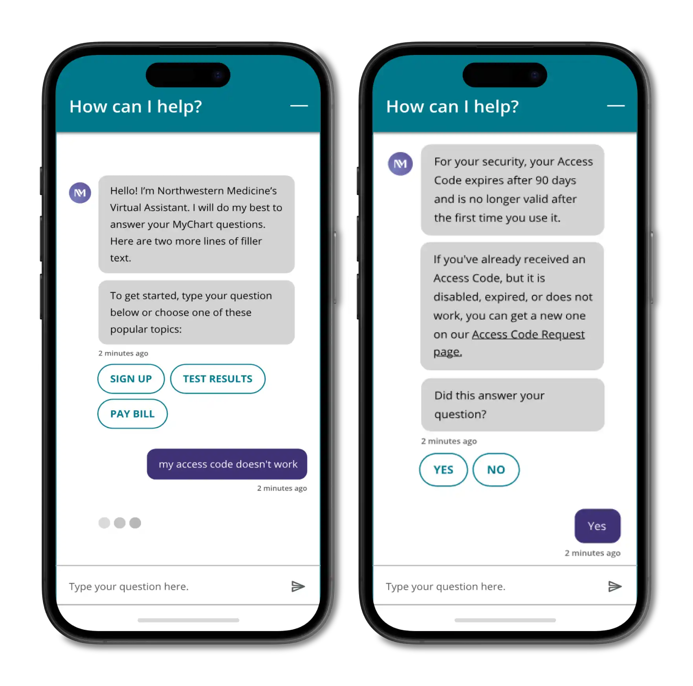
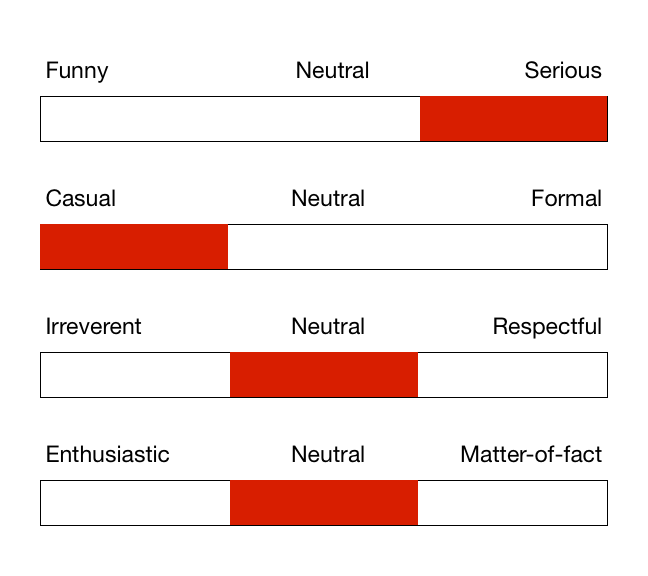
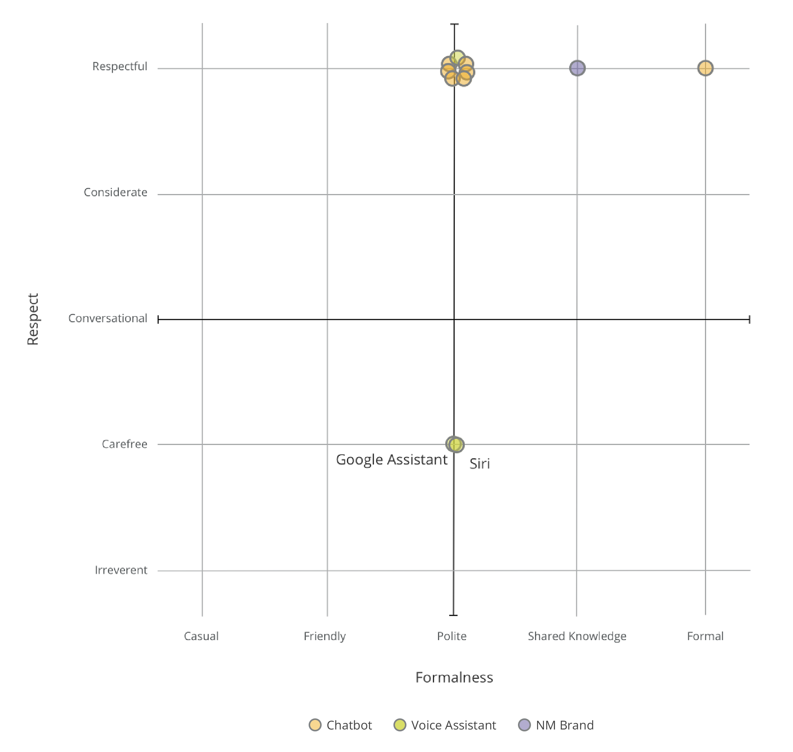
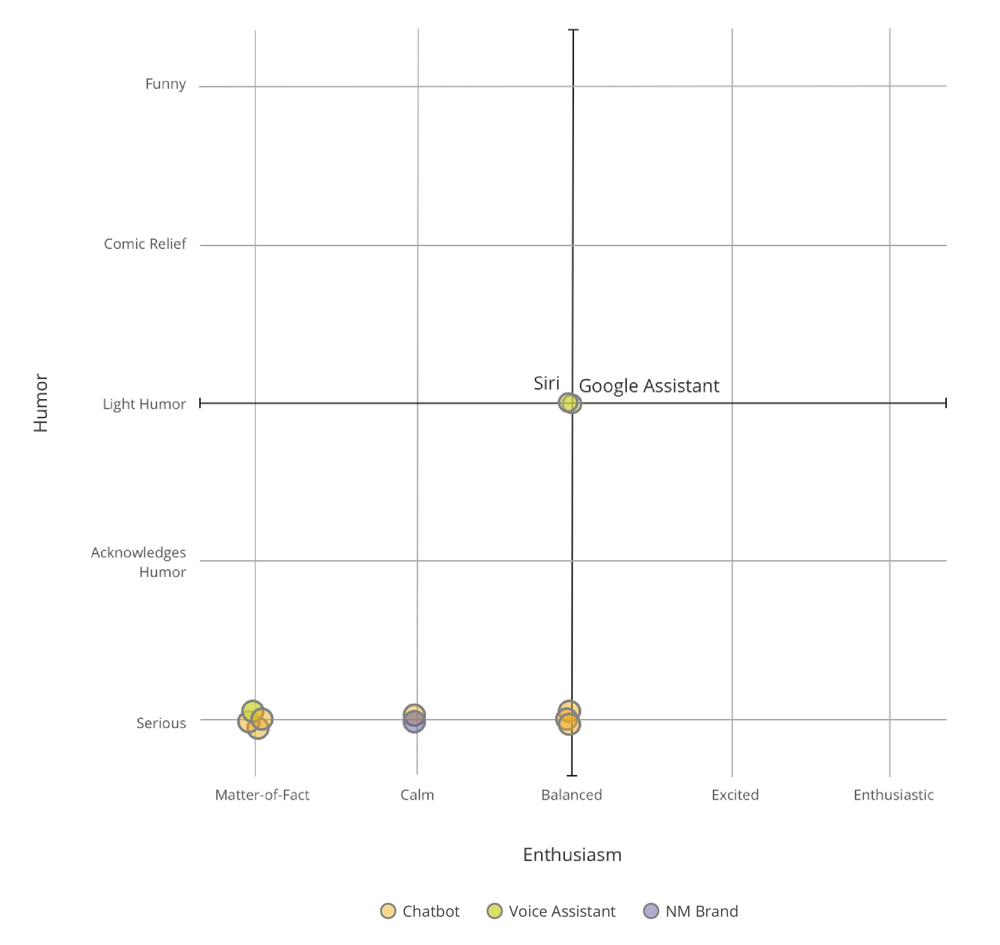
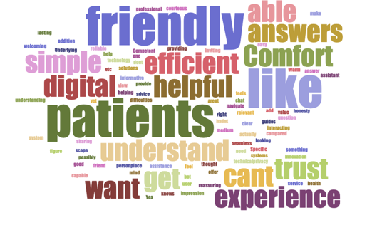
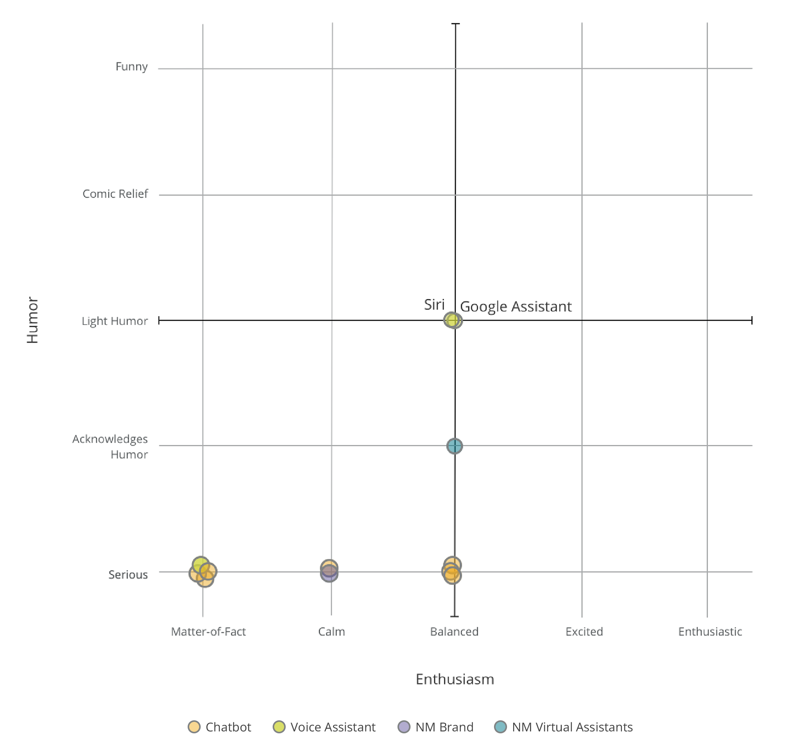
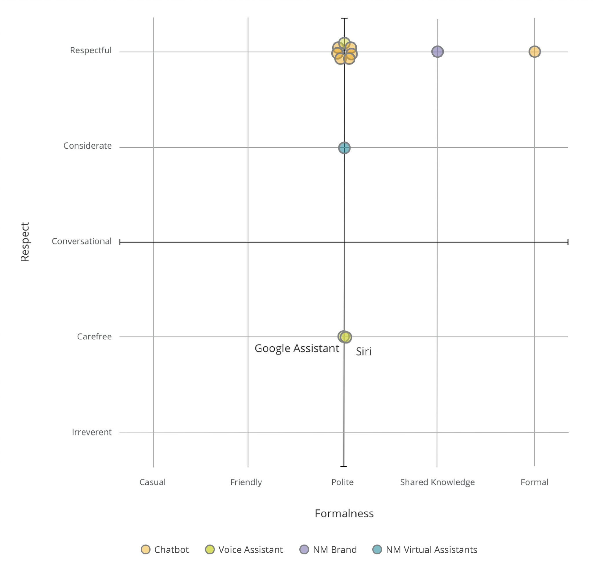
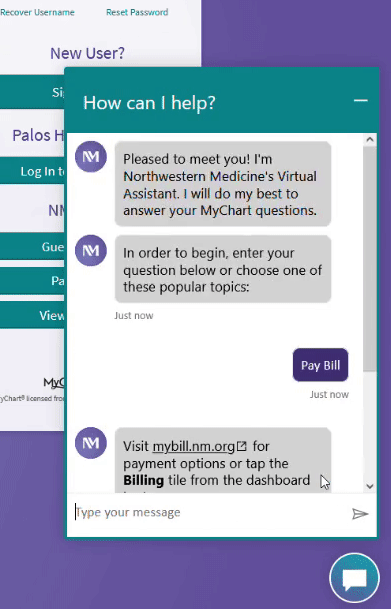

Virtual Assistant Voice Guidelines

Project Details
Objective
At the end of 2020, Northwestern Medicine (NM) launched a proprietary chatbot on NM.org to address overwhelming patient demand for self-service options. I worked with stakeholders across the health system to create voice guidelines for virtual assistants that matched our existing high standards for customer service.
What is Voice?
Before jumping into the research, I knew that defining the voice would involve understanding and categorizing emotions - a process that had inherent ambiguity and subjectivity. While there are many articles on the web discussing the topic, Nielsen Norman Group (NNG) took the most data-focused approach, by defining tone and voice in four dimensions. I decided to adapt this scale to my research.

Competitive Analysis
I hoped to identify trends in healthcare virtual assistants, so I performed a competitive analysis by breaking the NNG dimensions of voice into standardized, five-point scales. Several competitors had chatbots and one had an Alexa skill, which I plotted on two charts along with the NM brand guidelines.


Generally, healthcare competitors aligned with one another, preferring to be academic, measured, and professional instead of friendly and energetic. However, after adding Google and Siri to the charts to capture trends in voice assistants, it was clear that there was an opportunity for us to improve on the existing trends and convey more friendliness with our voice.
Stakeholder Survey
The chatbot’s implementation impacted teams across the health system, and I wanted to draw on their collective expertise in branding, patient interactions, and customer service by soliciting stakeholders’ opinions on the ideal voice via a survey.
The responses were surprising in that they mostly supported my recommendation to make the voice friendlier than the current brand guidelines. In fact “friendly” was tied with “patients” as the most used descriptor when stakeholders were asked to describe the ideal virtual assistant’s voice.

In all dimensions, a majority of stakeholders agreed to move one point closer to the warmer, friendlier end of the map, as represented by the blue dot on the charts below.


Guidelines
Using my research and the survey results, I developed formal guidelines for all virtual assistants, which I presented and distributed to stakeholders for feedback. After some discussions and small edits, the guidelines were approved by all stakeholders.
Conclusion
The chatbot launched with a heightened sense of urgency due to an influx of calls around COVID-19 testing and vaccine information. This resulted in a “Phase 1” version whose responses were copied and pasted directly from other NM.org pages with minimal editing. However, content writers gradually rewrote default responses and content to match the voice guidelines. As there is a lot of content, this continues to be a work in progress.
